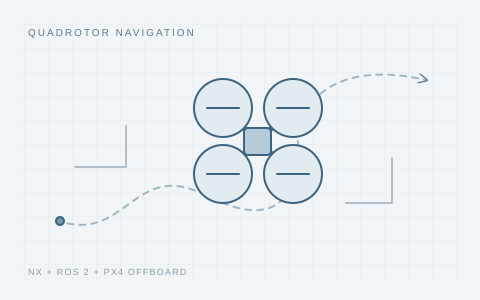

Quadrotor Navigation and Trajectory Tracking
2026.03 — 2026.04

Concept illustration / 研究示意
Overview
An NX + ROS 2 + PX4 Offboard control system, validated through real flights in a motion-capture environment.
Research & Engineering
- 设计装配四旋翼样机；搭建 NX + ROS 2 + PX4 Offboard 控制架构；在动捕环境下完成实机飞行验证。
Related Publications
See my CV for the complete research experience.